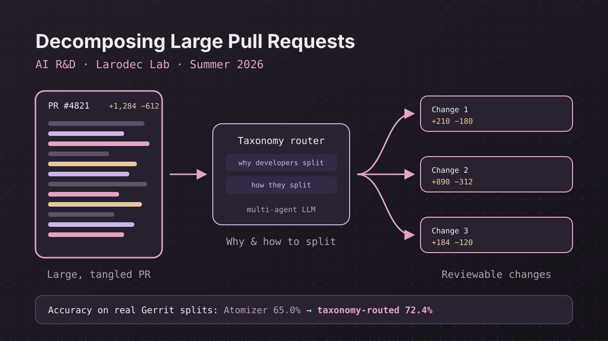

Summer 2026 · AI R&D · Larodec Lab
Toward AI-Assisted Decomposition of Large Pull Requests
Can a multi-agent LLM split a large pull request into smaller changes that reviewers can actually handle? I tested a published framework on real developer history, found where it breaks, and built a pipeline that does better.

The problem
Large pull requests are hard to review: they mix unrelated changes, so reviewers miss problems or put off the review. Research tools such as Atomizer, a multi-agent LLM framework for untangling commits published at ICSE 2026, promise to split them automatically.
But those tools are mostly tested on synthetic benchmarks. My question was how well they work on the way real developers actually split their changes.
How it works
Build a real-world dataset
Mined 937,327 Gerrit changes from 7 open-source ecosystems and kept 142 validated change-split cases, each traced to the developer's own words explaining the split.
Evaluate the state of the art
Ran Atomizer on these real cases instead of synthetic benchmarks. It reached 65.0% accuracy.
Understand how developers split
Built a taxonomy of why and how developers split changes, with strong inter-rater agreement (κ = 0.896 and 0.769).
Find the failure mode
Diagnosed over-splitting, cutting changes into too many pieces, as the main cost driver.
Build a better pipeline
Designed a taxonomy-routed pipeline that uses what the taxonomy reveals to guide the split. It reached 72.4% accuracy.
Results
On real developer splits, the taxonomy-routed pipeline improved accuracy by 7.4 points over the published Atomizer baseline.
What I learned
How to evaluate an AI research tool honestly: build data from real behavior, measure carefully, study the failures before changing the model, and let that understanding shape the fix.